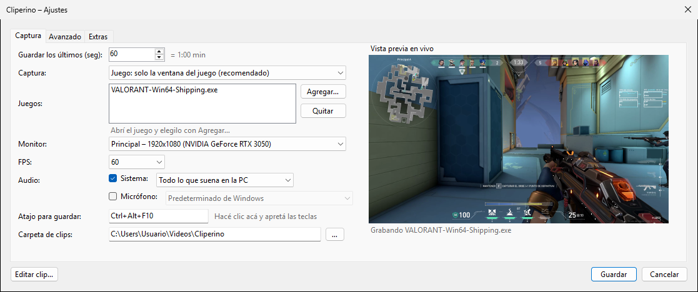
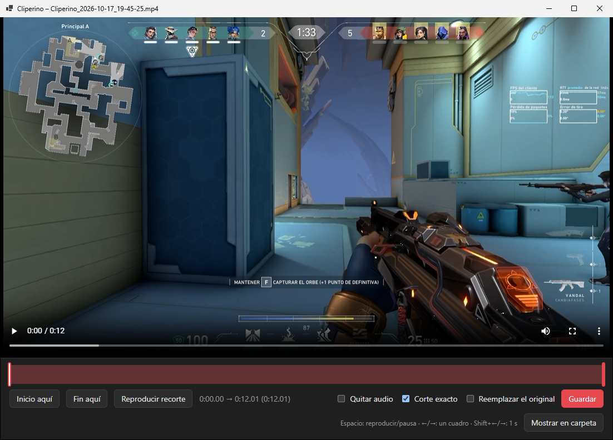

Qué hace
Guarda lo que ya pasó
Siempre tiene los últimos segundos o minutos listos. Apretás el atajo y queda un .mp4 en tu carpeta de clips.
Cualquier GPU, o incluso sin una
Usa el codificador de tu placa: NVIDIA, AMD o Intel, dedicada o integrada. Si no hay, usa el procesador.
Solo el juego
Graba la ventana del juego o la pantalla entera, y el audio de toda la PC o solo el del juego. El micrófono es opcional.
Editor incluido
Recortá el clip o sacale el audio en segundos, sin abrir otro programa.
Liviano
Vive en la bandeja del sistema y casi no se nota mientras jugás.
Así se ve


Cómo se usa
- Descargá e instalá Cliperino. La primera vez te ofrece bajar ffmpeg (unos 100 MB), que es lo que usa para grabar.
- Abrí tu juego. Cliperino queda en la bandeja del sistema, al lado del reloj, grabando.
- Cuando pase algo que valga la pena, apretá Ctrl + Alt + F10. El clip queda en
Videos\Cliperino. - Hacé clic en el aviso de "Clip guardado" para recortarlo, o cambiá el atajo y la duración desde los Ajustes.
Preguntas frecuentes
Windows dice que "protegió el equipo". ¿Es seguro?
Aparece porque Cliperino es un proyecto chico y no está firmado digitalmente. Tocá "Más información" y después "Ejecutar de todas formas". El código está completo en GitHub para quien quiera revisarlo.
¿Cuál descargo, el instalador o la portable?
El instalador, si no sabés cuál elegir: lo deja en su lugar, crea el acceso en el menú Inicio y se desinstala desde la configuración de Windows. La portable es un solo .exe que podés llevar donde quieras.
¿Afecta el rendimiento del juego?
Muy poco: la grabación la hace la placa de video y el buffer se guarda en el disco en pedazos de 2 segundos.
Encontré un error o tengo una idea
Contalo en los issues de GitHub. También se puede abrir desde Ajustes → Extras.